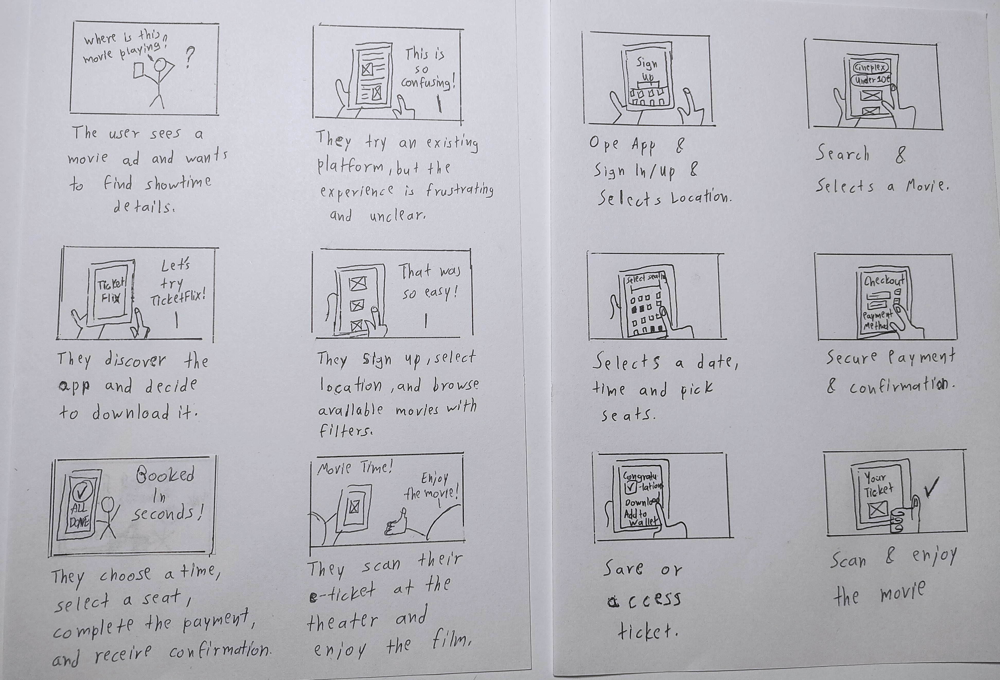

UX Designer
ToolFigma, Google Doc, Google Slide
DurationOctomber 2024 to November 2024 - 3 Weeks
Problem
Movie enthusiasts often struggle with finding reliable showtime information and navigating complex booking platforms. Many existing solutions lack personalization, making the process frustrating and discouraging for users seeking a seamless movie-going experience.
The Goal
Simplifying the movie-going experience by providing an efficient and user-friendly mobile ticketing platform. Empowering users to effortlessly discover movies, book tickets, and manage their bookings while delivering a seamless integration with their lifestyle and preferences.

After conducting foundational research, I developed two user personas based on Google's provided examples,
adapting them to align with the needs and goals of my project. These personas were crafted to represent the
target audience, highlighting their motivations, pain points, and behaviors to guide the design process effectively.
Pain Points User Personas


Storyboards
The method I chose to ideating potential solutions was by creating big-picture and close-up storyboards which allowed me to not only empathize more with my users but also easily share with potential stakeholders what my approach is for this problem.
Paper Wireframes
From the storyboards I started progressing towards developing paper wireframes while prioritizing quantity over quality.

Digital Wireframes
By applying the Gestalt principles into the designs, it becomes easier to recognize which elements are grouped with one another and makes it easier for the future engineering team to imagine how they would function.


Low-Fidelity
During the low-fi prototyping phase I focused more on the connection between screens which helped quickly helped reveal some issues early on in the design process.

Hi-Fidelity
During the hi-fi prototyping phase, I concentrated on refining the visual design and interactions, ensuring a polished and seamless user experience while addressing any remaining usability issues.


The final product of this project is a clickable high-fidelity prototype hosted through Figma's prototype feature.
TicketFlix has the potential to transform the way people plan their movie outings. By simplifying the ticket booking
process and creating a user-friendly experience, it can make cinema visits more accessible and enjoyable.
Overall, I've learned so much from this project, having the Google's UX Design Certificate Courses guide me through each step of the process.
I’ve gained valuable insights into the importance of user feedback and usability testing. These processes are crucial for identifying pain points,
making them indispensable tools in creating a user-centered experience. After several more usability test studies and finalizing design details and
more, I would potentially look into seeing if this is a viably publishable app.